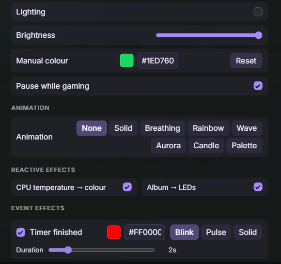
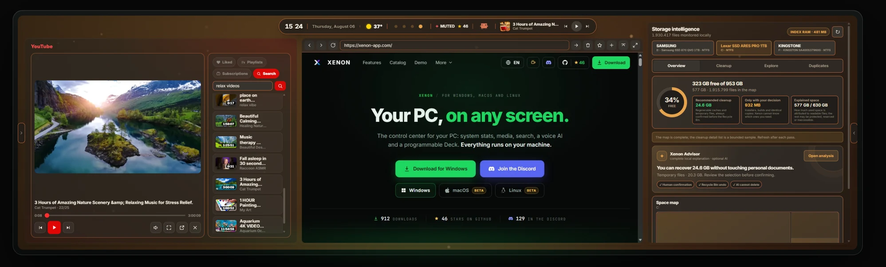

Xenon AI
Say "Hey Xenon" and it answers, through Gemini, ChatGPT or Claude, or through Ollama on the same PC.

It runs on your PC and appears on a spare monitor, a tablet, your phone or a CORSAIR Xeneon Edge. It is free and open source.
Xenon is not code-signed — a certificate costs money every year and Xenon is free. Windows treats an unsigned installer few people have downloaded as an unknown, so it shows a blue box with only "Don't run" in sight.
That is being fixed: supporters are funding the first year of the certificate. See how close it is — signing will not clear the warning overnight, but it stops resetting with every release.
Get-FileHash .\Xenon-Setup-x64.exe -Algorithm SHA256
Five of the areas it covers; the full list of widgets is further down.
Say "Hey Xenon" and it answers, through Gemini, ChatGPT or Claude, or through Ollama on the same PC.
A grid of programmable keys that open apps, switch OBS scenes, send hotkeys and webhooks, or drive Discord voice and Spotify.

CPU, GPU, RAM, network and the real in-game frame rate, kept for thirty days.

Pull the top bar down and type the way you would say it, like "photos from december". The same index, kept current on the PC in the background, is what draws the map of a drive the moment you open it; cleanup proposes only what is on a fixed list of caches and temporary files, and what it removes goes to the Recycle Bin.
Hue, WLED, Govee, LIFX, Nanoleaf and your CORSAIR gear, driven by CPU temperature, album art or a timer running out.


Themes, backgrounds, widgets and whole packs made by other users. Copy a code, paste it into Xenon and it is applied.
One installer, which sets up the app, the dashboard engine behind it and the task that starts them at login.
| Platform | File | Requirements | More |
|---|---|---|---|
| WindowsYour OS | Windows installer | Windows 10 or 11, 64-bit. Installs the app and starts it at login. | All files for this release |
| macOSBetaYour OS | Mac Universal | macOS 11 or later, Apple Silicon and Intel in one file. | What beta means here |
| LinuxBetaYour OS | AppImage (x86_64) | Any x86_64 desktop. GNOME and KDE are the two it is tested on. | .deb·What beta means here |
macOS and Linux are in beta. The dashboard, the widgets, the Store and the integrations are the same everywhere; what still differs is the part that reads your machine, and the README table says exactly what works where.
Windows blocked the download, or called it a virus? That is a false positive: the build is not code-signed yet, so it starts from zero reputation. The FAQ explains how to check the file's hash yourself, and how to get it back.
Xenon installs on the PC it monitors, so start there. Then this screen becomes one of its panels: scan the pairing QR from the PC, or send yourself this link.
The project has no ads, no investors and no paid version. It is funded by the people listed here.